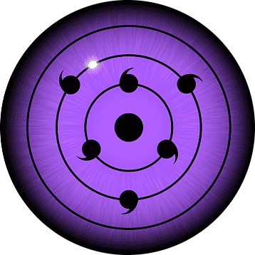

Purple Rinnegan

Sasuke Sharingan and Madara rinnegan
During the fourth ninja war naruto and sasuke become the children of sage of six paths and with the power bestowed upon them they fight madar uchiha who was reincarnated by kabuto.
Both naruto and sasuke fight tremendously and then sasuke's purple rinnegan is awakened and they defeat madara uchiha .
Will everything go back to normal?
-
Lot of lives have been lost.
-
If everyone who survived start to work together for the peace and harmony.
Who will be next hokage?
- Sasuke
- Naruto
- Sakura
- Kakashi
Want to know? Click here
More about the trio
| Name |
Powers |
| Naruto |
|
| Sasuke |
- Sharingan
- Mangekyu Sharingan
- Chidori
- Amaterasu
|
|
Sakura
|
- Genjutsu
- Healing
- Strength of a Hundred Seals
- Immense Strength
|